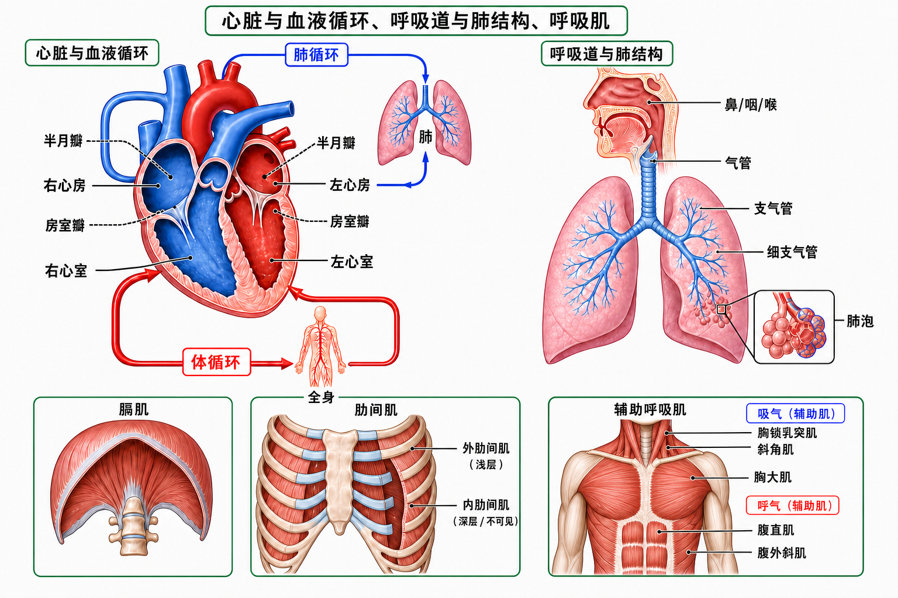

Day 32 · 心血管与呼吸系统解剖
把心脏、血管、肺和呼吸肌看成一套氧气运输管线：空气进肺，血液带氧，心脏做泵，肌肉才有持续输出。
一句话总结
心肺系统像训练时的“氧气物流公司”：肺泡负责把氧装车，血管负责配送，心脏四腔负责分流加压，膈肌和肋间肌负责把空气吸进来。

看图顺序：左侧先看心脏四腔和体循环/肺循环，右侧看空气从鼻咽喉到肺泡，底部看膈肌、肋间肌和辅助呼吸肌。
核心要点
- 心脏四腔：左右心房接血，左右心室泵血，右心去肺，左心去全身。真实例子
字面意思
心房像接收室，心室像加压泵。右心房接回全身缺氧血，右心室把血送去肺；左心房接回肺来的含氧血，左心室把血打到全身。
大白话
心脏不是一个混合水桶，而是两台串联泵：右泵负责“去肺换气”，左泵负责“给肌肉送货”。
为什么影响训练
运动强度升高时，肌肉要更多氧。左心室每次泵出的血和每分钟泵血量会影响有氧表现，Day33 会继续讲每搏输出量和心输出量。
跑步加速后心跳变快，不是心脏随便乱跳，而是四腔泵血频率提高，帮助腿部肌肉更快拿到氧和营养。
常见误解❌以为左右心“力量一样”。✅左心室要把血送到全身，壁更厚，压力更高；右心室只送到肺，压力较低。
- 瓣膜：房室瓣和半月瓣像单向门，保证血液只朝正确方向流。底层机制
房室瓣位于心房和心室之间，防止心室收缩时血倒回心房。半月瓣位于心室出口，防止主动脉或肺动脉里的血倒流回心室。
真实例子你听到的心音主要来自瓣膜关闭。运动时心率升高，瓣膜开关更频繁，但正常情况下仍保持单向流动。
训练含义瓣膜类型 位置 主要作用 房室瓣 心房与心室之间 心室收缩时防止血回流心房 半月瓣 心室出口处 心室舒张时防止血回流心室 教练不需要诊断瓣膜病，但要知道异常胸闷、晕厥、心悸不是“意志力差”。这些红旗要回到 Day31 的筛查和转诊流程。
常见误解❌以为血液靠“来回晃动”通过心脏。✅正常血流由瓣膜控制方向，靠心室收缩产生压力。
- 体循环与肺循环：体循环送氧到全身，肺循环把缺氧血送回肺换气。考试锚点
体循环
路径是左心室 → 主动脉 → 全身毛细血管 → 静脉 → 右心房。它负责把氧和营养送到工作肌肉，并带走二氧化碳和代谢产物。
肺循环
路径是右心室 → 肺动脉 → 肺毛细血管 → 肺静脉 → 左心房。它负责在肺泡附近把二氧化碳卸下、把氧装上。
记忆抓手
右心去肺，左心去身。先换气，再配送；先回收，再出货。
肺动脉带的是缺氧血，肺静脉带的是含氧血。这和“动脉一定含氧、静脉一定缺氧”的粗暴记法相反。
训练含义有氧训练本质上在挑战这条运输链：肺通气、肺泡交换、血液携氧、心脏泵血、肌肉摄氧都要协作。
- 动脉/静脉/毛细血管：动脉承压，静脉回流，毛细血管负责交换。底层机制
动脉壁厚、弹性强，适合承受心室射血带来的高压。静脉壁薄、压力低，常有瓣膜帮助血液回心。毛细血管壁极薄，是氧、二氧化碳、营养和代谢产物交换的地方。
真实例子血管 结构特点 训练相关 动脉 厚壁、高压、弹性好 运动时收缩压上升主要和动脉压力有关 静脉 薄壁、低压、有瓣膜 小腿肌肉泵和呼吸泵帮助静脉回流 毛细血管 管壁极薄、分布细密 耐力训练可增加毛细血管密度，提高氧交换效率 长时间站着不动容易腿胀，是静脉回流慢。走路或踮脚时小腿肌肉挤压静脉，像把血往心脏方向推。
常见误解❌以为血管只是“管子”。✅不同血管结构不同，决定了它们承压、回流、交换的角色。
- 呼吸道分级：空气从鼻/咽/喉进入气管，再到支气管、细支气管和肺泡。真实例子
字面意思
呼吸道是空气通道。上段负责过滤、湿润和加温，越往下越像树枝分叉，最终把空气送到肺泡。
大白话
它像城市道路：鼻咽喉是入口，气管是主干道，支气管是大路，细支气管是小路，肺泡是收发货站。
为什么影响训练
运动时通气量上升，气道必须让更多空气快速进出。哮喘、气道狭窄或呼吸节奏失控，会让强度还没到肌肉极限，呼吸先卡住。
冲刺后喘得厉害，是通气量快速增加。身体在通过更快、更深的呼吸，把氧送进肺泡并排出二氧化碳。
常见误解❌以为吸进空气就等于肌肉马上得到氧。✅空气必须到肺泡，氧还要跨过肺泡-毛细血管膜进入血液，再由循环送到肌肉。
- 肺泡：肺泡是气体交换终点，氧进血、二氧化碳出血。底层机制
肺泡壁和毛细血管壁都很薄，氧从肺泡进入血液，二氧化碳从血液进入肺泡。这个过程靠分压差推动，不是靠意念多吸几口就无限增加。
真实例子爬楼时呼吸加快，是因为肌肉产生更多二氧化碳，也需要更多氧。肺泡交换和血流速度一起决定你能不能持续输出。
训练含义耐力训练可改善通气效率、毛细血管网络和肌肉用氧能力。你感觉“同样配速没那么喘”，通常不是肺泡变成大气球，而是整条运输链更省力。
常见误解❌以为肺越大有氧就一定越好。✅肺容量有帮助，但有氧表现还受心输出量、血红蛋白、毛细血管、线粒体等多环节限制。
- 呼吸肌：膈肌是主力，肋间肌辅助扩胸，胸锁乳突肌等在高强度时帮忙。训练含义
膈肌
膈肌像胸腔底部的圆顶活塞。吸气时下降，胸腔容积增大，空气被吸入；呼气时放松上升，空气排出。
肋间肌
肋间肌在肋骨之间，帮助肋骨上提或下降，改变胸廓大小。安静呼吸时参与较少，高通气时更明显。
辅助呼吸肌
高强度或呼吸困难时，胸锁乳突肌、斜角肌、胸大肌、腹肌群等会参与，帮助吸气或用力呼气。
深蹲、硬拉等动作中，呼吸还影响腹内压和躯干稳定。呼吸不是只为供氧，也参与核心稳定。
常见误解❌以为“耸肩吸气”就是深呼吸。✅真正高效的安静吸气以膈肌为主，肩颈过度参与常提示呼吸模式紧张。
- 训练连接：心肺解剖是后续 VO2max、心率储备、血压反应和有氧适应的地基。底层机制
VO2max 最大摄氧量不是单个器官能力，而是空气进肺、氧进血、心脏泵血、血管配送、肌肉摄氧和线粒体利用的总结果。
真实例子同样跑 30 分钟，新手心率高、呼吸乱、腿酸快；训练一段时间后，心脏每次泵血更多，肌肉毛细血管和线粒体更好，同样速度更轻松。
训练含义理解解剖后，Day33 的 Karvonen 心率储备、Day34 的急性反应和训练适应会更好懂：不是背公式，而是在给这套运输系统定强度。
常见误解❌以为心肺训练只练“肺活量”。✅更重要是整套氧运输与利用系统的协同效率。
常见误区
❌很多人以为动脉都含氧、静脉都缺氧。✅肺动脉带缺氧血去肺，肺静脉带含氧血回左心。
❌很多人以为喘就是肺不行。✅喘可能来自通气需求、二氧化碳堆积、心输出量、肌肉用氧能力或节奏控制，不只看肺。
❌很多人把呼吸肌只当“呼吸用”。✅膈肌、腹肌群和胸廓活动还参与躯干稳定，影响大重量动作控制。
记忆口诀
“右心去肺，左心去身；动脉承压，静脉回心；气道分树，肺泡换气；膈肌下沉，氧才进局。”
翻转卡复习
实操关联
- 有氧训练：配速、坡度和间歇会提高肌肉需氧量，心脏泵血和肺泡换气必须同步跟上。
- 力量训练：大重量憋气会改变胸腔压力和血压反应，高风险客户需更谨慎。
- 减脂训练：长时间中低强度训练依赖氧运输系统，不能只看出汗量。
- 新手教学：先让客户理解“喘”是身体在排二氧化碳和供氧，不等于训练失败。
- 康复和慢病人群：异常胸闷、晕厥、呼吸困难要回到筛查和转诊流程，不硬推进强度。
- 后续学习：Day33 的心率储备、Day34 的急性反应，都会建立在今天这张心肺解剖地图上。